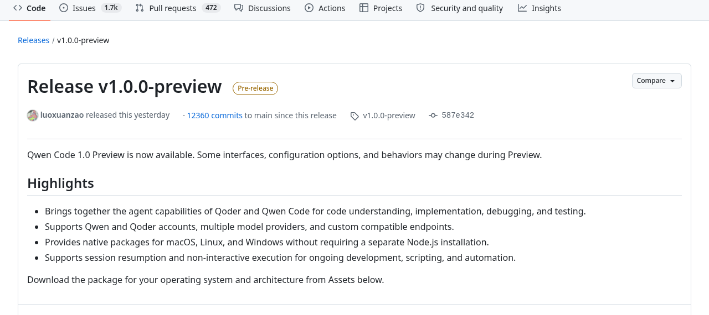
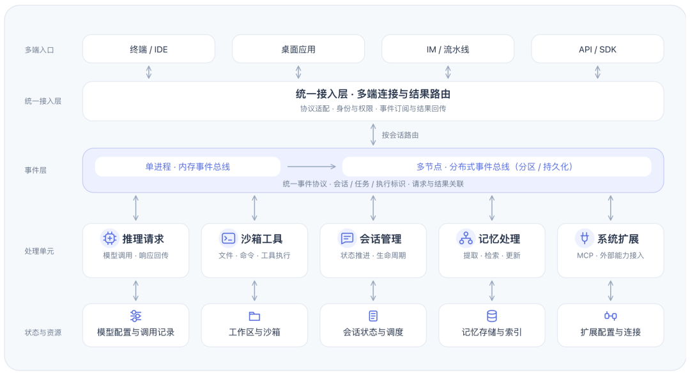
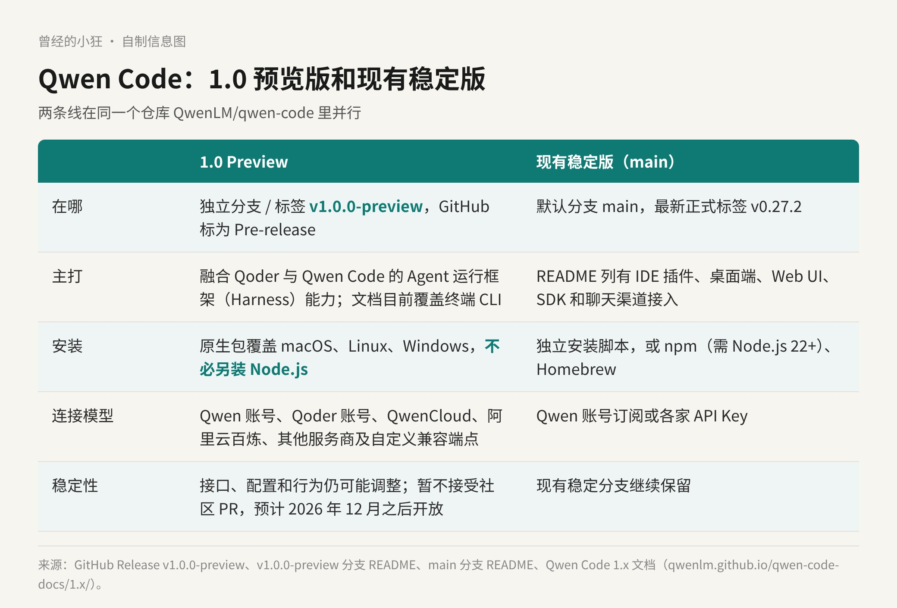

11 月 11 日中午，阿里在 GitHub 上放出了 Qwen Code 的 v1.0.0-preview。版本号从 0.27 一下跳到 1.0，听上去像一次大换代，可它并没有直接顶掉现在的版本：1.0 Preview 走的是一条独立的分支，现有的稳定分支继续保留。
所以对开发者来说，这次最实际的问题其实只有两个：1.0 到底换了什么？我现在该装哪一个？
Qwen Code 1.0 官方发布海报，标语是「以事件为语言，连接 Agent 与世界」。GitHub 上这一版标注为 Pre-release。图片来源：阿里官方发布，经 IT之家转载
先认一下两个名字。Qwen Code 是通义团队的开源编程 Agent，最早住在终端里，你用自然语言让它读代码、改功能、查问题、跑测试。Qoder 是阿里的另一款 AI 编程产品。
1.0 Preview 做的事，用 README 的原话说，是融合了 Qoder 与 Qwen Code 的 Agent 运行框架（Harness）能力。Release 页写得更具体一点：把两边的 Agent 能力合到一起，用在代码理解、实现、调试和测试上。
按阿里官方发布、IT之家转述的说法，这次是把在 Qoder 里打磨过的 Harness 能力并进 Qwen Code，两者纳入同一套开源内核，给开发者一套可以嵌进自己产品的 Agent 运行基础。
这句话是这次发布的重心。以前 Qwen Code 给人的印象是「终端里一个好用的编程助手」；1.0 想讲的故事是，它底下那套跑 Agent 的东西，也可以被你拿走、装进自己的系统里。
GitHub 上的 Release 页列了四条亮点：
一，融合 Qoder 与 Qwen Code 的 Agent 能力，用于代码理解、实现、调试和测试。
二，支持 Qwen 账号和 Qoder 账号、多家模型服务商，以及自定义的兼容端点。
三，提供 macOS、Linux、Windows 的原生安装包，不需要另外安装 Node.js。
四，支持会话恢复和非交互执行，方便持续开发、写脚本和做自动化。

GitHub 上的 Release v1.0.0-preview 页面，标为 Pre-release，列出四条亮点。截图来源：github.com/QwenLM/qwen-code/releases/tag/v1.0.0-preview
把这四条展开，落到手上大概是这样。
连接模型。启动后用 /auth 选连接方式：Qoder 账号、Qwen 账号（文档写明当前要求有效的 Plus 或 Pro 套餐）、QwenCloud、阿里云百炼，或者别家服务商的预设，再不行就配一个自定义的兼容端点。然后用 /model 选模型。文档特别提醒了一句：账号登录和 API Key 是两种连接，有订阅不等于自动拿到另一个端点的调用权限。
安装。Release 一共挂了 8 个原生包：macOS 的 arm64 和 x64，Linux 的 arm64 和 x64（各有 glibc 与 musl 两版），Windows 的 arm64 和 x64，单个包在 54.5 MB 到 70.9 MB 之间。也可以用官方一行安装脚本，Linux、macOS 用 curl，Windows 用 PowerShell。装好后有 qwen update 检查和安装更新，qwen rollback 回到上一个版本。
会话。qwen --continue 接着当前项目最近的一次会话，qwen --resume 挑更早的会话。会话还能开分支：/branch 从当前对话分出一条新会话去试另一种方案。/rewind 可以回退对话或文件，不过文档也说清楚了，它不替代 Git，也撤不回部署、已发出的请求这类外部操作。
非交互。qwen -p 提交一句提示、输出结果就退出，不开交互界面。输出可以选 text、json 或逐行的 stream-json，退出码也分得很细：0 成功，1 结果失败，41 认证错误，42 输入错误，52 配置错误，130 已取消。要注意，非交互运行会把当前目录当作可信目录，加载项目配置、Hook 和项目里的 MCP 服务器，跑无人值守任务前得先把权限配好。
架构上的说法，来自阿里官方的发布（经 IT之家转载）。Qwen Code 1.0 从进程内的内存事件总线起步，沿着统一事件模型往分布式走：把接入、调度和执行分层扩展，用「手脑分离」让推理编排和工具执行各管各的，从「一个进程、多个会话」走向「多个节点、更多会话」。

Qwen Code 1.0 架构演进示意：多端入口经统一接入层进入事件层，再分发到推理、沙箱工具、会话、记忆和系统扩展等处理单元。图片来源：阿里官方发布，经 IT之家转载
官方给了四点分工：推理、记忆和工具这些处理单元围绕事件按需接入；模型服务走统一入口，集中管配置、访问授权和调用记录；沙箱在相同配置与权限边界内分配和复用，减少重复初始化和空闲占用；MCP 的配置、授权和连接统一治理。
「手脑分离」这个说法挺形象。脑子是推理编排，决定下一步做什么；手是工具执行，真去读文件、跑命令。两边分开，脑子可以集中管，手可以按需多开，这正是把编程 Agent 从一个人的终端搬到一整个团队、一整条流水线上需要的样子。
不过，愿景和眼下能用的接口要分开看。Preview 分支自带的文档目前覆盖的是终端 CLI，文档原话是「实验性设置不代表稳定的集成接口承诺」，非交互那一页也写明不代表承诺独立 SDK 的兼容性。现阶段想把它接进自己的系统，最稳的路子是 CLI 的非交互模式加 stream-json 输出；更深的嵌入接口，等它稳定下来再上更踏实。
两条线现在在同一个仓库 QwenLM/qwen-code 里并行。稳定版在默认分支 main 上，最新的正式标签是 v0.27.2。它的 README 列着 IDE 插件、桌面端、Web UI、SDK，以及 Telegram、钉钉、微信、飞书这些聊天渠道的接入，安装除了独立脚本，还可以走 npm（需要 Node.js 22 以上）或 Homebrew。
1.0 Preview 在独立的 v1.0.0-preview 分支上。README 说得很坦白：Preview 还在快速迭代，团队会尽量保持兼容，但接口、配置和行为在稳定前仍可能调整，升级前要看版本说明。为了集中推进，现阶段暂不接受社区 PR，预计 2026 年 12 月之后再开放，这段时间欢迎提 Issue。

自制信息图：1.0 Preview 与现有稳定版对照。数据来自 GitHub Release、两条分支的 README 和 1.x 官方文档。
我的建议是这样分：
日常写代码、团队已经接了 IDE 插件、SDK 或聊天渠道的，先留在稳定版，别为了一个 1.0 的号码打乱手上的工作流。
想用 Qoder 账号登录、想要免装 Node.js 的原生包，或者正在评估把编程 Agent 跑进脚本和流水线的，可以装 Preview，在单独的项目里先试。
两边都装的话要留个心眼：Preview 用的是原生安装，稳定版还可以用 npm 或 Homebrew 装，同一台机器上很容易出现两份 qwen。文档提醒过，机器上有多份安装时，先用 qwen --version 确认 shell 实际启动的是哪一份，再去排查配置。
Qwen Code 1.0 现在还是 Preview，用 Apache 2.0 许可开源。它让我看到的变化是：编程助手的竞争，正在从「谁在终端里更好用」，挪到「谁的运行时能被别人拿去用」。Qoder 的经验并进开源内核，阿里押的是后一种。
至于值不值得现在就切过去，我的答案是先别急。装一份 Preview 跑几个真实任务，等 12 月之后社区 PR 开放、接口稳下来，再决定要不要把它接进自己的产品。
来源清单：
https://github.com/QwenLM/qwen-code/releases/tag/v1.0.0-preview
https://github.com/QwenLM/qwen-code/
https://qwenlm.github.io/qwen-code-docs/1.x/zh/users/overview/
https://www.ithome.com/1/025/393.htm